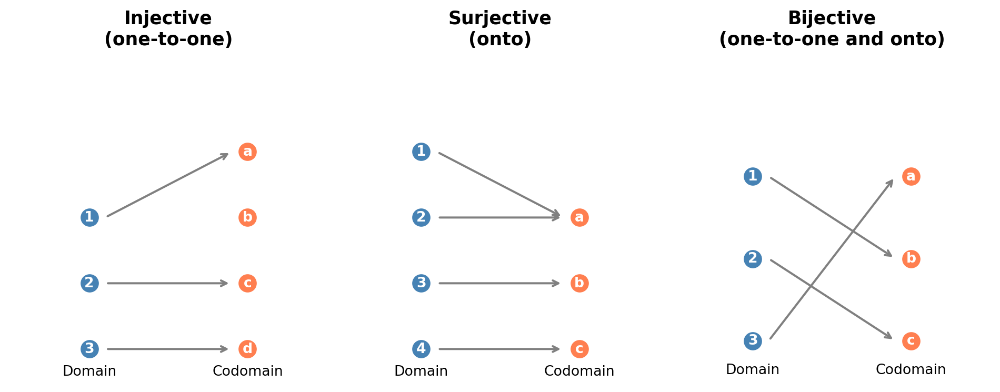
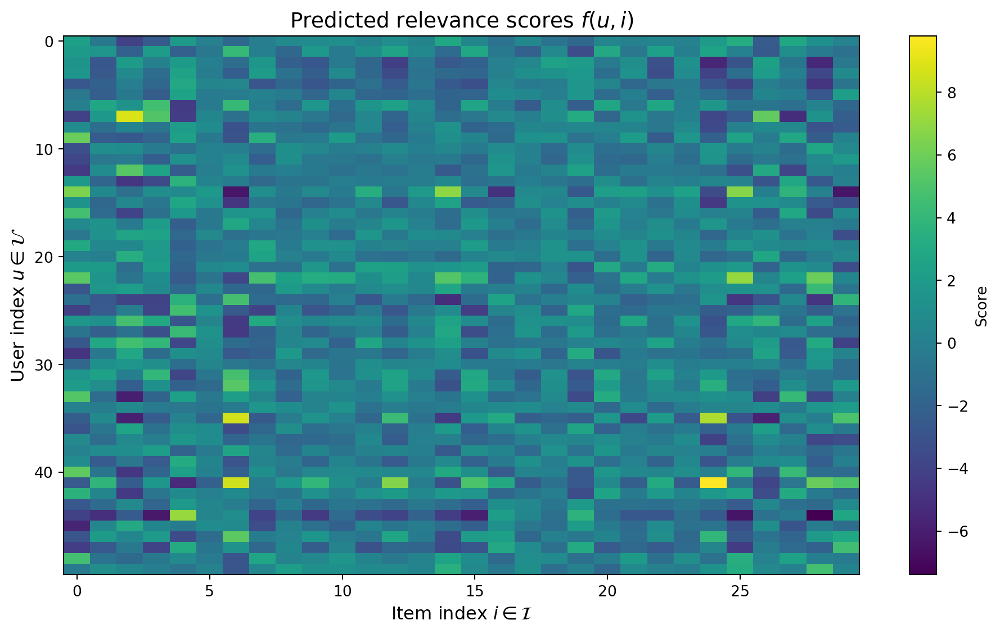
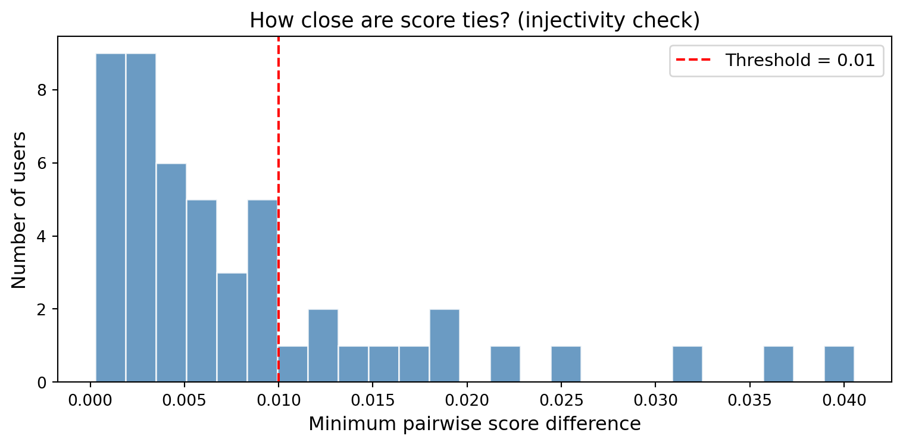

Every mathematical statement in machine learning rests on a small collection of foundational concepts: sets to describe collections of objects, functions to describe mappings between them, and logic to state precisely what is true. This chapter establishes the notation and vocabulary used throughout the rest of the book.
21.1 Motivation
Consider a recommendation system. There is a set of users \(\mathcal{U}\), a set of items \(\mathcal{I}\), and a function \(f: \mathcal{U} \times \mathcal{I} \to \mathbb{R}\) that assigns a predicted relevance score to each user, item pair. The system recommends items by solving
for a given user \(u\). This single expression uses sets (\(\mathcal{U}\), \(\mathcal{I}\)), the Cartesian product (\(\mathcal{U} \times \mathcal{I}\)), a function (\(f\)), the real numbers (\(\mathbb{R}\)), and the argmax operator. Without precise definitions of these objects, the expression is ambiguous.
The goal of this chapter is to build a precise, self-contained foundation so that every formula that follows has a clear meaning.
21.2 Sets and Set Operations
21.2.1 Definition and notation
A set is an unordered collection of distinct objects, called elements or members. If \(x\) is an element of a set \(\mathcal{S}\), write \(x \in \mathcal{S}\); otherwise \(x \notin \mathcal{S}\).
Sets can be specified by:
Roster notation: \(\mathcal{S} = \{a, b, c\}\).
Set-builder notation: \(\mathcal{S} = \{x \in \mathbb{R} : x^2 < 4\}\), read as “the set of real numbers \(x\) such that \(x^2 < 4\).”
Important standard sets:
Table 21.1: Standard number sets used throughout this book.
Symbol
Set
\(\mathbb{N}\)
Natural numbers \(\{0, 1, 2, \dots\}\)
\(\mathbb{Z}\)
Integers
\(\mathbb{Q}\)
Rational numbers
\(\mathbb{R}\)
Real numbers
\(\mathbb{R}^d\)
\(d\)-dimensional real vectors
\(\mathbb{C}\)
Complex numbers
\(\emptyset\)
Empty set
21.2.2 Subsets and equality
\(\mathcal{A} \subseteq \mathcal{B}\) means every element of \(\mathcal{A}\) is also in \(\mathcal{B}\): \(\forall x, \; x \in \mathcal{A} \implies x \in \mathcal{B}\). If additionally \(\mathcal{A} \neq \mathcal{B}\), write \(\mathcal{A} \subset \mathcal{B}\) (proper subset).
Two sets are equal (\(\mathcal{A} = \mathcal{B}\)) if and only if \(\mathcal{A} \subseteq \mathcal{B}\) and \(\mathcal{B} \subseteq \mathcal{A}\).
21.2.3 Set operations
Given sets \(\mathcal{A}\) and \(\mathcal{B}\) within a universal set \(\mathcal{X}\):
Union: \(\mathcal{A} \cup \mathcal{B} = \{x : x \in \mathcal{A} \text{ or } x \in \mathcal{B}\}\).
Intersection: \(\mathcal{A} \cap \mathcal{B} = \{x : x \in \mathcal{A} \text{ and } x \in \mathcal{B}\}\).
Complement: \(\mathcal{A}^c = \{x \in \mathcal{X} : x \notin \mathcal{A}\}\).
Set difference: \(\mathcal{A} \setminus \mathcal{B} = \{x : x \in \mathcal{A} \text{ and } x \notin \mathcal{B}\}\).
Proof of the first law. Let \(x \in (\mathcal{A} \cup \mathcal{B})^c\). Then \(x \notin \mathcal{A} \cup \mathcal{B}\), which means \(x \notin \mathcal{A}\) and \(x \notin \mathcal{B}\). Hence \(x \in \mathcal{A}^c\) and \(x \in \mathcal{B}^c\), so \(x \in \mathcal{A}^c \cap \mathcal{B}^c\). The reverse inclusion follows by the same reasoning in reverse. \(\square\)
21.2.5 Cartesian product
The Cartesian product of \(\mathcal{A}\) and \(\mathcal{B}\) is
\[
\mathcal{A} \times \mathcal{B} = \{(a, b) : a \in \mathcal{A}, \; b \in \mathcal{B}\}.
\tag{21.3}\]
This generalizes to \(n\) sets: \(\mathcal{A}_1 \times \mathcal{A}_2 \times \cdots \times \mathcal{A}_n\). The space \(\mathbb{R}^d = \mathbb{R} \times \mathbb{R} \times \cdots \times \mathbb{R}\) (\(d\) times) is the Cartesian product that underlies every feature vector in machine learning.
21.2.6 Power set
The power set\(\mathcal{P}(\mathcal{S})\) is the set of all subsets of \(\mathcal{S}\). If \(|\mathcal{S}| = n\), then \(|\mathcal{P}(\mathcal{S})| = 2^n\). This exponential growth is directly relevant to combinatorial feature selection: choosing a subset of \(n\) features means searching over \(2^n\) possibilities.
Figure 21.1: Venn diagrams illustrating the four basic set operations: union, intersection, difference, and symmetric difference.
21.2.7 Cardinality and countability
The cardinality\(|\mathcal{S}|\) of a finite set is its number of elements. For infinite sets, a set is countable if its elements can be placed in one-to-one correspondence with \(\mathbb{N}\) (like \(\mathbb{Z}\) or \(\mathbb{Q}\)). A set is uncountable if no such correspondence exists (like \(\mathbb{R}\)).
This distinction matters for ML: discrete distributions are defined by summation over countable sets, while continuous distributions require integration over uncountable sets.
21.3 Relations and Equivalence Classes
21.3.1 Binary relations
A binary relation\(R\) on a set \(\mathcal{S}\) is a subset \(R \subseteq \mathcal{S} \times \mathcal{S}\). If \((a, b) \in R\), write \(a \, R \, b\).
A relation \(R\) on \(\mathcal{S}\) is:
Reflexive if \(a \, R \, a\) for all \(a \in \mathcal{S}\).
Symmetric if \(a \, R \, b \implies b \, R \, a\).
Transitive if \(a \, R \, b\) and \(b \, R \, c \implies a \, R \, c\).
Antisymmetric if \(a \, R \, b\) and \(b \, R \, a \implies a = b\).
21.3.2 Equivalence relations
A relation that is reflexive, symmetric, and transitive is an equivalence relation, denoted \(\sim\). An equivalence relation partitions \(\mathcal{S}\) into disjoint equivalence classes:
Example in ML. Define a relation on trained models: \(m_1 \sim m_2\) if \(m_1\) and \(m_2\) achieve the same test accuracy (within numerical tolerance). This is an equivalence relation, and each equivalence class groups models by their performance level, a foundation for model selection.
21.3.3 Partial and total orders
A relation that is reflexive, antisymmetric, and transitive is a partial order (\(\leq\)). If additionally every pair of elements is comparable (\(a \leq b\) or \(b \leq a\) for all \(a, b\)), it is a total order.
The real numbers \(\mathbb{R}\) with \(\leq\) form a total order. The power set \(\mathcal{P}(\mathcal{S})\) with \(\subseteq\) forms a partial order (not every pair of subsets is comparable).
21.4 Functions: Types and Properties
21.4.1 Definition
A function\(f: \mathcal{A} \to \mathcal{B}\) is a rule that assigns to each element \(a \in \mathcal{A}\) exactly one element \(f(a) \in \mathcal{B}\). Here:
\(\mathcal{A}\) is the domain.
\(\mathcal{B}\) is the codomain.
The image (or range) is \(f(\mathcal{A}) = \{f(a) : a \in \mathcal{A}\} \subseteq \mathcal{B}\).
Formally, \(f\) is a subset of \(\mathcal{A} \times \mathcal{B}\) such that for each \(a \in \mathcal{A}\), there exists exactly one \(b \in \mathcal{B}\) with \((a, b) \in f\).
21.4.2 Injective, surjective, bijective
These three properties characterize how a function maps between domain and codomain:
Injective (one-to-one): \(f(a_1) = f(a_2) \implies a_1 = a_2\). Different inputs produce different outputs. No information is lost.
Surjective (onto): \(f(\mathcal{A}) = \mathcal{B}\). Every element of the codomain is hit. The function covers the full output space.
Bijective: Both injective and surjective. There is a one-to-one correspondence between \(\mathcal{A}\) and \(\mathcal{B}\), and an inverse \(f^{-1}: \mathcal{B} \to \mathcal{A}\) exists.
These notions appear throughout ML:
Table 21.2: Function types and their ML interpretations.
Function type
ML interpretation
Example
Injective
Lossless encoding
Feature embedding into higher dimension
Surjective
Full coverage of output space
Softmax maps \(\mathbb{R}^k\) onto the probability simplex
Bijective
Reversible transformation
Normalizing flows
21.4.3 Composition
Given \(f: \mathcal{A} \to \mathcal{B}\) and \(g: \mathcal{B} \to \mathcal{C}\), the composition\(g \circ f: \mathcal{A} \to \mathcal{C}\) is defined by \((g \circ f)(a) = g(f(a))\).
where each \(f_\ell\) is a parameterized function (affine transformation followed by nonlinearity). The chain rule of calculus, central to backpropagation, is a statement about the derivative of composed functions.
21.4.4 Inverse functions
If \(f: \mathcal{A} \to \mathcal{B}\) is bijective, the inverse function\(f^{-1}: \mathcal{B} \to \mathcal{A}\) satisfies \(f^{-1}(f(a)) = a\) for all \(a \in \mathcal{A}\) and \(f(f^{-1}(b)) = b\) for all \(b \in \mathcal{B}\).
When \(f\) is not bijective, one can still define:
Left inverse (if \(f\) is injective): \(g \circ f = \text{id}_\mathcal{A}\).
Right inverse (if \(f\) is surjective): \(f \circ g = \text{id}_\mathcal{B}\).
Pseudo-inverse: a generalization used extensively in linear algebra (the Moore, Penrose pseudo-inverse).
Code
import matplotlib.pyplot as pltimport matplotlib.patches as mpatchesfig, axes = plt.subplots(1, 3, figsize=(10, 4))def draw_function(ax, title, domain, codomain, arrows):"""Draw a function diagram with domain and codomain as labeled points.""" ax.set_xlim(-0.5, 3.5) ax.set_ylim(-0.5, max(len(domain), len(codomain)) +0.5) ax.set_title(title, fontsize=13, fontweight="bold") ax.axis("off")# Draw domain pointsfor i, label inenumerate(domain): y =len(domain) -1- i ax.plot(0.5, y, "o", color="steelblue", markersize=12, zorder=5) ax.text(0.5, y, label, ha="center", va="center", fontsize=10, color="white", fontweight="bold", zorder=6)# Draw codomain pointsfor i, label inenumerate(codomain): y =len(codomain) -1- i ax.plot(2.5, y, "o", color="coral", markersize=12, zorder=5) ax.text(2.5, y, label, ha="center", va="center", fontsize=10, color="white", fontweight="bold", zorder=6)# Draw arrowsfor (di, ci) in arrows: y_from =len(domain) -1- di y_to =len(codomain) -1- ci ax.annotate("", xy=(2.3, y_to), xytext=(0.7, y_from), arrowprops=dict(arrowstyle="->", color="gray", lw=1.5), )# Labels ax.text(0.5, -0.4, "Domain", ha="center", fontsize=10) ax.text(2.5, -0.4, "Codomain", ha="center", fontsize=10)# Injective (not surjective): 3 -> 4draw_function(axes[0], "Injective\n(one-to-one)", ["1", "2", "3"], ["a", "b", "c", "d"], [(0, 0), (1, 2), (2, 3)])# Surjective (not injective): 4 -> 3draw_function(axes[1], "Surjective\n(onto)", ["1", "2", "3", "4"], ["a", "b", "c"], [(0, 0), (1, 0), (2, 1), (3, 2)])# Bijective: 3 -> 3draw_function(axes[2], "Bijective\n(one-to-one and onto)", ["1", "2", "3"], ["a", "b", "c"], [(0, 1), (1, 2), (2, 0)])plt.tight_layout()plt.show()

Figure 21.2: Illustration of injective, surjective, and bijective functions. Arrows show the mapping from domain (left) to codomain (right).
21.5 Propositional Logic
21.5.1 Propositions and connectives
A proposition is a statement that is either true (T) or false (F). Propositions can be combined using logical connectives:
Table 21.3: Logical connectives.
Connective
Symbol
Meaning
Negation
\(\neg P\)
“not \(P\)”
Conjunction
\(P \land Q\)
“\(P\) and \(Q\)”
Disjunction
\(P \lor Q\)
“\(P\) or \(Q\)” (inclusive)
Implication
\(P \implies Q\)
“if \(P\) then \(Q\)”
Biconditional
\(P \iff Q\)
“\(P\) if and only if \(Q\)”
21.5.2 Truth tables
The truth value of a compound proposition is determined by its components. The most important one to internalize is implication: \(P \implies Q\) is false only when \(P\) is true and \(Q\) is false. In particular, if \(P\) is false, then \(P \implies Q\) is vacuously true regardless of \(Q\).
Table 21.4: Truth table for basic logical connectives.
\(P\)
\(Q\)
\(\neg P\)
\(P \land Q\)
\(P \lor Q\)
\(P \implies Q\)
\(P \iff Q\)
T
T
F
T
T
T
T
T
F
F
F
T
F
F
F
T
T
F
T
T
F
F
F
T
F
F
T
T
21.5.3 Logical equivalences
Two propositions are logically equivalent (\(\equiv\)) if they have the same truth values under all assignments. Key equivalences:
Double negation: \(\neg(\neg P) \equiv P\).
De Morgan’s: \(\neg(P \land Q) \equiv \neg P \lor \neg Q\) and \(\neg(P \lor Q) \equiv \neg P \land \neg Q\).
Example. The statement “model \(f\) achieves zero training error” can be written \(\forall i \in \{1, \dots, n\}, \; f(\mathbf{x}_i) = y_i\). Its negation, “\(f\) makes at least one training error”, is \(\exists i \in \{1, \dots, n\}, \; f(\mathbf{x}_i) \neq y_i\).
21.6.4 Nested quantifiers
The order of quantifiers matters:
\(\forall \epsilon > 0, \; \exists \delta > 0, \; |x - a| < \delta \implies |f(x) - f(a)| < \epsilon\): this is the definition of continuity.
\(\exists \delta > 0, \; \forall \epsilon > 0, \; |x - a| < \delta \implies |f(x) - f(a)| < \epsilon\): this is a much stronger (and usually false) statement.
21.7 Proof Techniques
Mathematical proofs are the currency of rigorous ML theory. Three core techniques appear repeatedly.
21.7.1 Direct proof
To prove \(P \implies Q\), assume \(P\) is true and derive \(Q\) through a chain of logical steps.
Example.Claim: If \(f\) is injective and \(g\) is injective, then \(g \circ f\) is injective.
Proof. Assume \((g \circ f)(a_1) = (g \circ f)(a_2)\). Then \(g(f(a_1)) = g(f(a_2))\). Since \(g\) is injective, \(f(a_1) = f(a_2)\). Since \(f\) is injective, \(a_1 = a_2\). \(\square\)
21.7.2 Proof by contradiction
To prove \(P\), assume \(\neg P\) and derive a contradiction.
Example.Claim:\(\sqrt{2}\) is irrational.
Proof. Assume for contradiction that \(\sqrt{2} = p/q\) where \(p, q \in \mathbb{Z}\), \(q \neq 0\), and \(\gcd(p, q) = 1\). Then \(2q^2 = p^2\), so \(p^2\) is even, hence \(p\) is even. Write \(p = 2k\). Then \(2q^2 = 4k^2\), so \(q^2 = 2k^2\), hence \(q\) is even. But then \(\gcd(p, q) \geq 2\), contradicting \(\gcd(p, q) = 1\). \(\square\)
21.7.3 Proof by (mathematical) induction
To prove a statement \(P(n)\) for all \(n \geq n_0\):
Base case: Prove \(P(n_0)\).
Inductive step: Prove that \(P(k) \implies P(k+1)\) for all \(k \geq n_0\).
Example.Claim: The number of subsets of an \(n\)-element set is \(2^n\).
Proof.Base case (\(n = 0\)): The empty set has one subset (itself). \(2^0 = 1\). ✓
Inductive step: Assume an \(n\)-element set has \(2^n\) subsets. Consider an \((n+1)\)-element set \(\mathcal{S} = \mathcal{S}' \cup \{s_{n+1}\}\) where \(|\mathcal{S}'| = n\). Every subset of \(\mathcal{S}\) either contains \(s_{n+1}\) or does not. The subsets not containing \(s_{n+1}\) are exactly the subsets of \(\mathcal{S}'\): there are \(2^n\) of these. The subsets containing \(s_{n+1}\) correspond one-to-one to subsets of \(\mathcal{S}'\) (add \(s_{n+1}\) to each): another \(2^n\). Total: \(2^n + 2^n = 2^{n+1}\). \(\square\)
21.8 Application: Formalizing a Recommendation System
A recommendation system illustrates how sets, functions, and logic come together in a real ML application. The formal specification below is representative of how recommendation problems are defined in the research literature.
import numpy as npimport matplotlib.pyplot as pltnp.random.seed(42)# Define the setsn_users =50n_items =30# Simulate latent factor model: f(u, i) = <user_embedding, item_embedding>embedding_dim =5user_embeddings = np.random.randn(n_users, embedding_dim)item_embeddings = np.random.randn(n_items, embedding_dim)# The function f: U x I -> R# f(u, i) = dot product of embeddings (plus some noise)scores = user_embeddings @ item_embeddings.T +0.1* np.random.randn(n_users, n_items)fig, ax = plt.subplots(figsize=(10, 6))im = ax.imshow(scores, aspect="auto", cmap="viridis")ax.set_xlabel("Item index $i \\in \\mathcal{I}$", fontsize=12)ax.set_ylabel("User index $u \\in \\mathcal{U}$", fontsize=12)ax.set_title("Predicted relevance scores $f(u, i)$", fontsize=14)plt.colorbar(im, ax=ax, label="Score")plt.tight_layout()plt.show()

Figure 21.3: Simulated recommendation scores for 50 users and 30 items. Each cell shows the predicted relevance score \(f(u, i)\). Brighter colors indicate higher predicted relevance.
The recommendation for user \(u\) is the item with the highest score:
import pandas as pd# For each user, find top-3 itemstop_k =3top_items = np.argsort(-scores, axis=1)[:, :top_k] # negative for descendingrows = []for u inrange(10): items = top_items[u] item_scores = [f"{scores[u, i]:.2f}"for i in items] rows.append({"User": f"$u_{{{u}}}$","Rank 1": f"Item {items[0]} ({item_scores[0]})","Rank 2": f"Item {items[1]} ({item_scores[1]})","Rank 3": f"Item {items[2]} ({item_scores[2]})", })df = pd.DataFrame(rows)from IPython.display import MarkdownMarkdown(df.to_markdown(index=False))
Table 21.5: Top-3 recommended items for the first 10 users, selected by argmax over predicted relevance scores.
Cartesian product: The domain of \(f\) is \(\mathcal{U} \times \mathcal{I}\), with \(|\mathcal{U} \times \mathcal{I}| = 50 \times 30 = 1500\) user, item pairs.
Function: \(f: \mathcal{U} \times \mathcal{I} \to \mathbb{R}\) assigns a score to each pair.
Argmax (quantifier): Recommendation for user \(u\) selects \(i^* = \operatorname{argmax}_{i \in \mathcal{I}} f(u, i)\).
Injectivity question: Is \(f(u, \cdot)\) injective for a given user? If so, the ranking is unique.
min_diffs = []for u inrange(n_users): sorted_scores = np.sort(scores[u]) diffs = np.diff(sorted_scores) min_diffs.append(np.min(np.abs(diffs)))fig, ax = plt.subplots(figsize=(8, 4))ax.hist(min_diffs, bins=25, color="steelblue", edgecolor="white", alpha=0.8)ax.set_xlabel("Minimum pairwise score difference", fontsize=12)ax.set_ylabel("Number of users", fontsize=12)ax.set_title("How close are score ties? (injectivity check)", fontsize=13)ax.axvline(0.01, color="red", linestyle="--", linewidth=1.5, label="Threshold = 0.01")ax.legend(fontsize=11)plt.tight_layout()plt.show()n_near_ties =sum(1for d in min_diffs if d <0.01)print(f"Users with near-ties (min diff < 0.01): {n_near_ties}/{n_users}")

Figure 21.4: Distribution of the minimum pairwise score difference for each user. Values near zero indicate near-ties where injectivity of the score function is practically violated.
Users with near-ties (min diff < 0.01): 37/50
When scores have near-ties, the argmax is not uniquely defined, the function \(f(u, \cdot)\) is not injective in the relevant range. Tie-breaking strategies (random, by item popularity, by recency) become necessary.
21.9 Summary
Sets formalize collections of objects. The Cartesian product \(\mathcal{A} \times \mathcal{B}\) defines the input space for multi-argument functions.
Functions map inputs to outputs. Injectivity (no information loss), surjectivity (full coverage), and bijectivity (reversibility) characterize how functions transform data.
Propositional logic provides connectives (\(\land, \lor, \neg, \implies\)) for combining statements. The contrapositive is a powerful proof tool.
Predicate logic adds quantifiers (\(\forall, \exists\)) to make statements about collections. Careful attention to quantifier order prevents ambiguity.
Proof techniques, direct, by contradiction, and by induction, are the tools for establishing mathematical results rigorously.
These concepts form the language in which all subsequent mathematical content is expressed.
21.10 Exercises
Set operations. Let \(\mathcal{A} = \{1, 2, 3, 4, 5\}\), \(\mathcal{B} = \{3, 4, 5, 6, 7\}\), and \(\mathcal{X} = \{1, 2, \dots, 10\}\). Compute \(\mathcal{A} \cup \mathcal{B}\), \(\mathcal{A} \cap \mathcal{B}\), \(\mathcal{A} \setminus \mathcal{B}\), \(\mathcal{A} \triangle \mathcal{B}\), and \(\mathcal{A}^c\).
De Morgan’s laws. Prove the second De Morgan law: \((\mathcal{A} \cap \mathcal{B})^c = \mathcal{A}^c \cup \mathcal{B}^c\).
Function classification. For each function below, determine whether it is injective, surjective, both, or neither:
\(f: \mathbb{R}^d \to \mathbb{R}^d\), \(f(\mathbf{x}) = \mathbf{A}\mathbf{x}\) where \(\mathbf{A}\) is an invertible \(d \times d\) matrix.
Composition. Prove that if \(f: \mathcal{A} \to \mathcal{B}\) is surjective and \(g: \mathcal{B} \to \mathcal{C}\) is surjective, then \(g \circ f\) is surjective.
Contrapositive. Write the contrapositive of: “If a model overfits, then training loss is lower than test loss.” Is the contrapositive logically equivalent to the original?
Quantifiers. Write the formal negation of: “For every \(\epsilon > 0\), there exists \(N\) such that for all \(n > N\), \(|a_n - L| < \epsilon\).”
Induction. Prove by induction that \(\sum_{i=1}^n i = n(n+1)/2\).
Coding: Power set. Write a Python function power_set(S) that returns the power set of a finite set S. Verify that \(|\mathcal{P}(\mathcal{S})| = 2^{|\mathcal{S}|}\) for \(|\mathcal{S}| = 0, 1, \dots, 10\).
Applied: Feature space. A dataset has 3 binary features and 2 categorical features with 4 and 5 levels respectively. How many possible distinct feature vectors exist? Express using Cartesian product notation and compute the cardinality.
Applied: Equivalence classes. Define a relation on the set of all real-valued functions \(\mathbb{R} \to \mathbb{R}\): \(f \sim g\) if \(f(x) = g(x)\) for all \(x \in [0, 1]\). Is this an equivalence relation? Describe what the equivalence classes look like.
Source Code
# Sets, Functions, and Logic {#sec-017-sets-functions-logic}Every mathematical statement in machine learning rests on a small collection of foundational concepts: sets to describe collections of objects, functions to describe mappings between them, and logic to state precisely what is true. This chapter establishes the notation and vocabulary used throughout the rest of the book.## Motivation {#sec-017-motivation}Consider a recommendation system. There is a set of users $\mathcal{U}$, a set of items $\mathcal{I}$, and a function $f: \mathcal{U} \times \mathcal{I} \to \mathbb{R}$ that assigns a predicted relevance score to each user, item pair. The system recommends items by solving$$i^* = \operatorname{argmax}_{i \in \mathcal{I}} f(u, i)$$ {#eq-017-recommendation}for a given user $u$. This single expression uses sets ($\mathcal{U}$, $\mathcal{I}$), the Cartesian product ($\mathcal{U} \times \mathcal{I}$), a function ($f$), the real numbers ($\mathbb{R}$), and the argmax operator. Without precise definitions of these objects, the expression is ambiguous.The goal of this chapter is to build a precise, self-contained foundation so that every formula that follows has a clear meaning.------------------------------------------------------------------------## Sets and Set Operations {#sec-017-sets}### Definition and notationA **set** is an unordered collection of distinct objects, called **elements** or **members**. If $x$ is an element of a set $\mathcal{S}$, write $x \in \mathcal{S}$; otherwise $x \notin \mathcal{S}$.Sets can be specified by:- **Roster notation**: $\mathcal{S} = \{a, b, c\}$.- **Set-builder notation**: $\mathcal{S} = \{x \in \mathbb{R} : x^2 < 4\}$, read as "the set of real numbers $x$ such that $x^2 < 4$."Important standard sets:| Symbol | Set ||----------------|--------------------------------------|| $\mathbb{N}$ | Natural numbers $\{0, 1, 2, \dots\}$ || $\mathbb{Z}$ | Integers || $\mathbb{Q}$ | Rational numbers || $\mathbb{R}$ | Real numbers || $\mathbb{R}^d$ | $d$-dimensional real vectors || $\mathbb{C}$ | Complex numbers || $\emptyset$ | Empty set |: Standard number sets used throughout this book. {#tbl-017-standard-sets}### Subsets and equality$\mathcal{A} \subseteq \mathcal{B}$ means every element of $\mathcal{A}$ is also in $\mathcal{B}$: $\forall x, \; x \in \mathcal{A} \implies x \in \mathcal{B}$. If additionally $\mathcal{A} \neq \mathcal{B}$, write $\mathcal{A} \subset \mathcal{B}$ (proper subset).Two sets are equal ($\mathcal{A} = \mathcal{B}$) if and only if $\mathcal{A} \subseteq \mathcal{B}$ and $\mathcal{B} \subseteq \mathcal{A}$.### Set operationsGiven sets $\mathcal{A}$ and $\mathcal{B}$ within a universal set $\mathcal{X}$:- **Union**: $\mathcal{A} \cup \mathcal{B} = \{x : x \in \mathcal{A} \text{ or } x \in \mathcal{B}\}$.- **Intersection**: $\mathcal{A} \cap \mathcal{B} = \{x : x \in \mathcal{A} \text{ and } x \in \mathcal{B}\}$.- **Complement**: $\mathcal{A}^c = \{x \in \mathcal{X} : x \notin \mathcal{A}\}$.- **Set difference**: $\mathcal{A} \setminus \mathcal{B} = \{x : x \in \mathcal{A} \text{ and } x \notin \mathcal{B}\}$.- **Symmetric difference**: $\mathcal{A} \triangle \mathcal{B} = (\mathcal{A} \setminus \mathcal{B}) \cup (\mathcal{B} \setminus \mathcal{A})$.### De Morgan's lawsFor any sets $\mathcal{A}, \mathcal{B} \subseteq \mathcal{X}$:$$(\mathcal{A} \cup \mathcal{B})^c = \mathcal{A}^c \cap \mathcal{B}^c, \qquad (\mathcal{A} \cap \mathcal{B})^c = \mathcal{A}^c \cup \mathcal{B}^c.$$ {#eq-017-de-morgan}**Proof of the first law.** Let $x \in (\mathcal{A} \cup \mathcal{B})^c$. Then $x \notin \mathcal{A} \cup \mathcal{B}$, which means $x \notin \mathcal{A}$ and $x \notin \mathcal{B}$. Hence $x \in \mathcal{A}^c$ and $x \in \mathcal{B}^c$, so $x \in \mathcal{A}^c \cap \mathcal{B}^c$. The reverse inclusion follows by the same reasoning in reverse. $\square$### Cartesian productThe **Cartesian product** of $\mathcal{A}$ and $\mathcal{B}$ is$$\mathcal{A} \times \mathcal{B} = \{(a, b) : a \in \mathcal{A}, \; b \in \mathcal{B}\}.$$ {#eq-017-cartesian}This generalizes to $n$ sets: $\mathcal{A}_1 \times \mathcal{A}_2 \times \cdots \times \mathcal{A}_n$. The space $\mathbb{R}^d = \mathbb{R} \times \mathbb{R} \times \cdots \times \mathbb{R}$ ($d$ times) is the Cartesian product that underlies every feature vector in machine learning.### Power setThe **power set** $\mathcal{P}(\mathcal{S})$ is the set of all subsets of $\mathcal{S}$. If $|\mathcal{S}| = n$, then $|\mathcal{P}(\mathcal{S})| = 2^n$. This exponential growth is directly relevant to combinatorial feature selection: choosing a subset of $n$ features means searching over $2^n$ possibilities.```{python}#| label: fig-017-set-operations#| fig-cap: "Venn diagrams illustrating the four basic set operations: union, intersection, difference, and symmetric difference."#| fig-width: 10#| fig-height: 6#| code-fold: trueimport numpy as npimport matplotlib.pyplot as pltfrom matplotlib.patches import Circlenp.random.seed(42)fig, axes = plt.subplots(2, 2, figsize=(10, 6))titles = [r"$\mathcal{A} \cup \mathcal{B}$(Union)",r"$\mathcal{A} \cap \mathcal{B}$(Intersection)",r"$\mathcal{A} \setminus \mathcal{B}$(Difference)",r"$\mathcal{A} \triangle \mathcal{B}$(Symmetric Difference)",]for ax, title inzip(axes.flat, titles): ax.set_xlim(-2, 3) ax.set_ylim(-1.5, 1.5) ax.set_aspect("equal") ax.set_title(title, fontsize=13) ax.axis("off") c1 = Circle((0, 0), 1.0, fill=False, edgecolor="black", linewidth=1.5) c2 = Circle((1, 0), 1.0, fill=False, edgecolor="black", linewidth=1.5) ax.add_patch(c1) ax.add_patch(c2) ax.text(-0.5, 0, r"$\mathcal{A}$", fontsize=12, ha="center", va="center") ax.text(1.5, 0, r"$\mathcal{B}$", fontsize=12, ha="center", va="center")# Generate points for shadingtheta = np.linspace(0, 2* np.pi, 300)xA = np.cos(theta)yA = np.sin(theta)xB =1+ np.cos(theta)yB = np.sin(theta)# Union shadingaxes[0, 0].fill(xA, yA, alpha=0.3, color="steelblue")axes[0, 0].fill(xB, yB, alpha=0.3, color="steelblue")# Intersection shading, approximate with sampled pointsxx, yy = np.meshgrid(np.linspace(-2, 3, 500), np.linspace(-1.5, 1.5, 500))in_A = xx**2+ yy**2<=1in_B = (xx -1) **2+ yy**2<=1axes[0, 1].contourf(xx, yy, (in_A & in_B).astype(float), levels=[0.5, 1.5], colors=["steelblue"], alpha=0.4)axes[1, 0].contourf(xx, yy, (in_A &~in_B).astype(float), levels=[0.5, 1.5], colors=["steelblue"], alpha=0.4)axes[1, 1].contourf(xx, yy, ((in_A &~in_B) | (in_B &~in_A)).astype(float), levels=[0.5, 1.5], colors=["steelblue"], alpha=0.4)# Re-draw circles on topfor ax in axes.flat: ax.add_patch(Circle((0, 0), 1.0, fill=False, edgecolor="black", linewidth=1.5)) ax.add_patch(Circle((1, 0), 1.0, fill=False, edgecolor="black", linewidth=1.5))plt.tight_layout()plt.show()```### Cardinality and countabilityThe **cardinality** $|\mathcal{S}|$ of a finite set is its number of elements. For infinite sets, a set is **countable** if its elements can be placed in one-to-one correspondence with $\mathbb{N}$ (like $\mathbb{Z}$ or $\mathbb{Q}$). A set is **uncountable** if no such correspondence exists (like $\mathbb{R}$).This distinction matters for ML: discrete distributions are defined by summation over countable sets, while continuous distributions require integration over uncountable sets.------------------------------------------------------------------------## Relations and Equivalence Classes {#sec-017-relations}### Binary relationsA **binary relation** $R$ on a set $\mathcal{S}$ is a subset $R \subseteq \mathcal{S} \times \mathcal{S}$. If $(a, b) \in R$, write $a \, R \, b$.A relation $R$ on $\mathcal{S}$ is:- **Reflexive** if $a \, R \, a$ for all $a \in \mathcal{S}$.- **Symmetric** if $a \, R \, b \implies b \, R \, a$.- **Transitive** if $a \, R \, b$ and $b \, R \, c \implies a \, R \, c$.- **Antisymmetric** if $a \, R \, b$ and $b \, R \, a \implies a = b$.### Equivalence relationsA relation that is reflexive, symmetric, and transitive is an **equivalence relation**, denoted $\sim$. An equivalence relation partitions $\mathcal{S}$ into disjoint **equivalence classes**:$$[a] = \{x \in \mathcal{S} : x \sim a\}.$$ {#eq-017-equiv-class}**Example in ML.** Define a relation on trained models: $m_1 \sim m_2$ if $m_1$ and $m_2$ achieve the same test accuracy (within numerical tolerance). This is an equivalence relation, and each equivalence class groups models by their performance level, a foundation for model selection.### Partial and total ordersA relation that is reflexive, antisymmetric, and transitive is a **partial order** ($\leq$). If additionally every pair of elements is comparable ($a \leq b$ or $b \leq a$ for all $a, b$), it is a **total order**.The real numbers $\mathbb{R}$ with $\leq$ form a total order. The power set $\mathcal{P}(\mathcal{S})$ with $\subseteq$ forms a partial order (not every pair of subsets is comparable).------------------------------------------------------------------------## Functions: Types and Properties {#sec-017-functions}### DefinitionA **function** $f: \mathcal{A} \to \mathcal{B}$ is a rule that assigns to each element $a \in \mathcal{A}$ exactly one element $f(a) \in \mathcal{B}$. Here:- $\mathcal{A}$ is the **domain**.- $\mathcal{B}$ is the **codomain**.- The **image** (or range) is $f(\mathcal{A}) = \{f(a) : a \in \mathcal{A}\} \subseteq \mathcal{B}$.Formally, $f$ is a subset of $\mathcal{A} \times \mathcal{B}$ such that for each $a \in \mathcal{A}$, there exists exactly one $b \in \mathcal{B}$ with $(a, b) \in f$.### Injective, surjective, bijectiveThese three properties characterize how a function maps between domain and codomain:- **Injective (one-to-one)**: $f(a_1) = f(a_2) \implies a_1 = a_2$. Different inputs produce different outputs. No information is lost.- **Surjective (onto)**: $f(\mathcal{A}) = \mathcal{B}$. Every element of the codomain is hit. The function covers the full output space.- **Bijective**: Both injective and surjective. There is a one-to-one correspondence between $\mathcal{A}$ and $\mathcal{B}$, and an inverse $f^{-1}: \mathcal{B} \to \mathcal{A}$ exists.These notions appear throughout ML:| Function type | ML interpretation | Example ||:-----------------------|:-----------------------|:-----------------------|| Injective | Lossless encoding | Feature embedding into higher dimension || Surjective | Full coverage of output space | Softmax maps $\mathbb{R}^k$ onto the probability simplex || Bijective | Reversible transformation | Normalizing flows |: Function types and their ML interpretations. {#tbl-017-function-types}### CompositionGiven $f: \mathcal{A} \to \mathcal{B}$ and $g: \mathcal{B} \to \mathcal{C}$, the **composition** $g \circ f: \mathcal{A} \to \mathcal{C}$ is defined by $(g \circ f)(a) = g(f(a))$.A deep neural network with $L$ layers computes$$\hat{y} = f_L \circ f_{L-1} \circ \cdots \circ f_1(\mathbf{x}),$$ {#eq-017-nn-composition}where each $f_\ell$ is a parameterized function (affine transformation followed by nonlinearity). The chain rule of calculus, central to backpropagation, is a statement about the derivative of composed functions.### Inverse functionsIf $f: \mathcal{A} \to \mathcal{B}$ is bijective, the **inverse function** $f^{-1}: \mathcal{B} \to \mathcal{A}$ satisfies $f^{-1}(f(a)) = a$ for all $a \in \mathcal{A}$ and $f(f^{-1}(b)) = b$ for all $b \in \mathcal{B}$.When $f$ is not bijective, one can still define:- **Left inverse** (if $f$ is injective): $g \circ f = \text{id}_\mathcal{A}$.- **Right inverse** (if $f$ is surjective): $f \circ g = \text{id}_\mathcal{B}$.- **Pseudo-inverse**: a generalization used extensively in linear algebra (the Moore, Penrose pseudo-inverse).```{python}#| label: fig-017-function-types#| fig-cap: "Illustration of injective, surjective, and bijective functions. Arrows show the mapping from domain (left) to codomain (right)."#| fig-width: 10#| fig-height: 4#| code-fold: trueimport matplotlib.pyplot as pltimport matplotlib.patches as mpatchesfig, axes = plt.subplots(1, 3, figsize=(10, 4))def draw_function(ax, title, domain, codomain, arrows):"""Draw a function diagram with domain and codomain as labeled points.""" ax.set_xlim(-0.5, 3.5) ax.set_ylim(-0.5, max(len(domain), len(codomain)) +0.5) ax.set_title(title, fontsize=13, fontweight="bold") ax.axis("off")# Draw domain pointsfor i, label inenumerate(domain): y =len(domain) -1- i ax.plot(0.5, y, "o", color="steelblue", markersize=12, zorder=5) ax.text(0.5, y, label, ha="center", va="center", fontsize=10, color="white", fontweight="bold", zorder=6)# Draw codomain pointsfor i, label inenumerate(codomain): y =len(codomain) -1- i ax.plot(2.5, y, "o", color="coral", markersize=12, zorder=5) ax.text(2.5, y, label, ha="center", va="center", fontsize=10, color="white", fontweight="bold", zorder=6)# Draw arrowsfor (di, ci) in arrows: y_from =len(domain) -1- di y_to =len(codomain) -1- ci ax.annotate("", xy=(2.3, y_to), xytext=(0.7, y_from), arrowprops=dict(arrowstyle="->", color="gray", lw=1.5), )# Labels ax.text(0.5, -0.4, "Domain", ha="center", fontsize=10) ax.text(2.5, -0.4, "Codomain", ha="center", fontsize=10)# Injective (not surjective): 3 -> 4draw_function(axes[0], "Injective\n(one-to-one)", ["1", "2", "3"], ["a", "b", "c", "d"], [(0, 0), (1, 2), (2, 3)])# Surjective (not injective): 4 -> 3draw_function(axes[1], "Surjective\n(onto)", ["1", "2", "3", "4"], ["a", "b", "c"], [(0, 0), (1, 0), (2, 1), (3, 2)])# Bijective: 3 -> 3draw_function(axes[2], "Bijective\n(one-to-one and onto)", ["1", "2", "3"], ["a", "b", "c"], [(0, 1), (1, 2), (2, 0)])plt.tight_layout()plt.show()```------------------------------------------------------------------------## Propositional Logic {#sec-017-propositional-logic}### Propositions and connectivesA **proposition** is a statement that is either true (T) or false (F). Propositions can be combined using **logical connectives**:| Connective | Symbol | Meaning ||:--------------|:--------------:|:-------------------------|| Negation | $\neg P$ | "not $P$" || Conjunction | $P \land Q$ | "$P$ and $Q$" || Disjunction | $P \lor Q$ | "$P$ or $Q$" (inclusive) || Implication | $P \implies Q$ | "if $P$ then $Q$" || Biconditional | $P \iff Q$ | "$P$ if and only if $Q$" |: Logical connectives. {#tbl-017-connectives}### Truth tablesThe truth value of a compound proposition is determined by its components. The most important one to internalize is **implication**: $P \implies Q$ is false only when $P$ is true and $Q$ is false. In particular, if $P$ is false, then $P \implies Q$ is vacuously true regardless of $Q$.| $P$ | $Q$ | $\neg P$ | $P \land Q$ | $P \lor Q$ | $P \implies Q$ | $P \iff Q$ ||:---:|:---:|:--------:|:-----------:|:----------:|:--------------:|:----------:|| T | T | F | T | T | T | T || T | F | F | F | T | F | F || F | T | T | F | T | T | F || F | F | T | F | F | T | T |: Truth table for basic logical connectives. {#tbl-017-truth-table}### Logical equivalencesTwo propositions are **logically equivalent** ($\equiv$) if they have the same truth values under all assignments. Key equivalences:- **Double negation**: $\neg(\neg P) \equiv P$.- **De Morgan's**: $\neg(P \land Q) \equiv \neg P \lor \neg Q$ and $\neg(P \lor Q) \equiv \neg P \land \neg Q$.- **Contrapositive**: $(P \implies Q) \equiv (\neg Q \implies \neg P)$.- **Distributive**: $P \land (Q \lor R) \equiv (P \land Q) \lor (P \land R)$.The contrapositive is particularly useful in proofs: to show $P \implies Q$, it suffices to show $\neg Q \implies \neg P$.------------------------------------------------------------------------## Predicate Logic and Quantifiers {#sec-017-predicate-logic}### PredicatesA **predicate** is a proposition-valued function of one or more variables. For example, $P(x): x > 0$ is a predicate over $\mathbb{R}$.### Quantifiers- **Universal quantifier**: $\forall x \in \mathcal{S}, \; P(x)$ means "$P(x)$ holds for every $x$ in $\mathcal{S}$."- **Existential quantifier**: $\exists x \in \mathcal{S}, \; P(x)$ means "there exists at least one $x$ in $\mathcal{S}$ such that $P(x)$ holds."### Negation of quantified statements$$\neg(\forall x, \; P(x)) \equiv \exists x, \; \neg P(x), \qquad \neg(\exists x, \; P(x)) \equiv \forall x, \; \neg P(x).$$ {#eq-017-quantifier-negation}**Example.** The statement "model $f$ achieves zero training error" can be written $\forall i \in \{1, \dots, n\}, \; f(\mathbf{x}_i) = y_i$. Its negation, "$f$ makes at least one training error", is $\exists i \in \{1, \dots, n\}, \; f(\mathbf{x}_i) \neq y_i$.### Nested quantifiersThe order of quantifiers matters:- $\forall \epsilon > 0, \; \exists \delta > 0, \; |x - a| < \delta \implies |f(x) - f(a)| < \epsilon$: this is the definition of continuity.- $\exists \delta > 0, \; \forall \epsilon > 0, \; |x - a| < \delta \implies |f(x) - f(a)| < \epsilon$: this is a much stronger (and usually false) statement.------------------------------------------------------------------------## Proof Techniques {#sec-017-proof-techniques}Mathematical proofs are the currency of rigorous ML theory. Three core techniques appear repeatedly.### Direct proofTo prove $P \implies Q$, assume $P$ is true and derive $Q$ through a chain of logical steps.**Example.** *Claim:* If $f$ is injective and $g$ is injective, then $g \circ f$ is injective.*Proof.* Assume $(g \circ f)(a_1) = (g \circ f)(a_2)$. Then $g(f(a_1)) = g(f(a_2))$. Since $g$ is injective, $f(a_1) = f(a_2)$. Since $f$ is injective, $a_1 = a_2$. $\square$### Proof by contradictionTo prove $P$, assume $\neg P$ and derive a contradiction.**Example.** *Claim:* $\sqrt{2}$ is irrational.*Proof.* Assume for contradiction that $\sqrt{2} = p/q$ where $p, q \in \mathbb{Z}$, $q \neq 0$, and $\gcd(p, q) = 1$. Then $2q^2 = p^2$, so $p^2$ is even, hence $p$ is even. Write $p = 2k$. Then $2q^2 = 4k^2$, so $q^2 = 2k^2$, hence $q$ is even. But then $\gcd(p, q) \geq 2$, contradicting $\gcd(p, q) = 1$. $\square$### Proof by (mathematical) inductionTo prove a statement $P(n)$ for all $n \geq n_0$:1. **Base case**: Prove $P(n_0)$.2. **Inductive step**: Prove that $P(k) \implies P(k+1)$ for all $k \geq n_0$.**Example.** *Claim:* The number of subsets of an $n$-element set is $2^n$.*Proof.* **Base case** ($n = 0$): The empty set has one subset (itself). $2^0 = 1$. ✓**Inductive step**: Assume an $n$-element set has $2^n$ subsets. Consider an $(n+1)$-element set $\mathcal{S} = \mathcal{S}' \cup \{s_{n+1}\}$ where $|\mathcal{S}'| = n$. Every subset of $\mathcal{S}$ either contains $s_{n+1}$ or does not. The subsets not containing $s_{n+1}$ are exactly the subsets of $\mathcal{S}'$: there are $2^n$ of these. The subsets containing $s_{n+1}$ correspond one-to-one to subsets of $\mathcal{S}'$ (add $s_{n+1}$ to each): another $2^n$. Total: $2^n + 2^n = 2^{n+1}$. $\square$------------------------------------------------------------------------## Application: Formalizing a Recommendation System {#sec-017-application}A recommendation system illustrates how sets, functions, and logic come together in a real ML application. The formal specification below is representative of how recommendation problems are defined in the research literature.```{python}#| label: fig-017-recommendation-system#| fig-cap: "Simulated recommendation scores for 50 users and 30 items. Each cell shows the predicted relevance score $f(u, i)$. Brighter colors indicate higher predicted relevance."#| fig-width: 10#| fig-height: 6#| code-fold: falseimport numpy as npimport matplotlib.pyplot as pltnp.random.seed(42)# Define the setsn_users =50n_items =30# Simulate latent factor model: f(u, i) = <user_embedding, item_embedding>embedding_dim =5user_embeddings = np.random.randn(n_users, embedding_dim)item_embeddings = np.random.randn(n_items, embedding_dim)# The function f: U x I -> R# f(u, i) = dot product of embeddings (plus some noise)scores = user_embeddings @ item_embeddings.T +0.1* np.random.randn(n_users, n_items)fig, ax = plt.subplots(figsize=(10, 6))im = ax.imshow(scores, aspect="auto", cmap="viridis")ax.set_xlabel("Item index $i \\in \\mathcal{I}$", fontsize=12)ax.set_ylabel("User index $u \\in \\mathcal{U}$", fontsize=12)ax.set_title("Predicted relevance scores $f(u, i)$", fontsize=14)plt.colorbar(im, ax=ax, label="Score")plt.tight_layout()plt.show()```The recommendation for user $u$ is the item with the highest score:```{python}#| label: tbl-017-top-recommendations#| tbl-cap: "Top-3 recommended items for the first 10 users, selected by argmax over predicted relevance scores."#| code-fold: falseimport pandas as pd# For each user, find top-3 itemstop_k =3top_items = np.argsort(-scores, axis=1)[:, :top_k] # negative for descendingrows = []for u inrange(10): items = top_items[u] item_scores = [f"{scores[u, i]:.2f}"for i in items] rows.append({"User": f"$u_{{{u}}}$","Rank 1": f"Item {items[0]} ({item_scores[0]})","Rank 2": f"Item {items[1]} ({item_scores[1]})","Rank 3": f"Item {items[2]} ({item_scores[2]})", })df = pd.DataFrame(rows)from IPython.display import MarkdownMarkdown(df.to_markdown(index=False))```The mathematical objects at work:1. **Sets**: $\mathcal{U} = \{u_0, \dots, u_{49}\}$, $\mathcal{I} = \{i_0, \dots, i_{29}\}$.2. **Cartesian product**: The domain of $f$ is $\mathcal{U} \times \mathcal{I}$, with $|\mathcal{U} \times \mathcal{I}| = 50 \times 30 = 1500$ user, item pairs.3. **Function**: $f: \mathcal{U} \times \mathcal{I} \to \mathbb{R}$ assigns a score to each pair.4. **Argmax (quantifier)**: Recommendation for user $u$ selects $i^* = \operatorname{argmax}_{i \in \mathcal{I}} f(u, i)$.5. **Injectivity question**: Is $f(u, \cdot)$ injective for a given user? If so, the ranking is unique.```{python}#| label: fig-017-injectivity-check#| fig-cap: "Distribution of the minimum pairwise score difference for each user. Values near zero indicate near-ties where injectivity of the score function is practically violated."#| fig-width: 8#| fig-height: 4#| code-fold: falsemin_diffs = []for u inrange(n_users): sorted_scores = np.sort(scores[u]) diffs = np.diff(sorted_scores) min_diffs.append(np.min(np.abs(diffs)))fig, ax = plt.subplots(figsize=(8, 4))ax.hist(min_diffs, bins=25, color="steelblue", edgecolor="white", alpha=0.8)ax.set_xlabel("Minimum pairwise score difference", fontsize=12)ax.set_ylabel("Number of users", fontsize=12)ax.set_title("How close are score ties? (injectivity check)", fontsize=13)ax.axvline(0.01, color="red", linestyle="--", linewidth=1.5, label="Threshold = 0.01")ax.legend(fontsize=11)plt.tight_layout()plt.show()n_near_ties =sum(1for d in min_diffs if d <0.01)print(f"Users with near-ties (min diff < 0.01): {n_near_ties}/{n_users}")```When scores have near-ties, the argmax is not uniquely defined, the function $f(u, \cdot)$ is not injective in the relevant range. Tie-breaking strategies (random, by item popularity, by recency) become necessary.------------------------------------------------------------------------## Summary {#sec-017-summary}1. **Sets** formalize collections of objects. The Cartesian product $\mathcal{A} \times \mathcal{B}$ defines the input space for multi-argument functions.2. **Relations** capture structure between elements. Equivalence relations create partitions; partial orders create rankings.3. **Functions** map inputs to outputs. Injectivity (no information loss), surjectivity (full coverage), and bijectivity (reversibility) characterize how functions transform data.4. **Propositional logic** provides connectives ($\land, \lor, \neg, \implies$) for combining statements. The contrapositive is a powerful proof tool.5. **Predicate logic** adds quantifiers ($\forall, \exists$) to make statements about collections. Careful attention to quantifier order prevents ambiguity.6. **Proof techniques**, direct, by contradiction, and by induction, are the tools for establishing mathematical results rigorously.These concepts form the language in which all subsequent mathematical content is expressed.------------------------------------------------------------------------## Exercises {#sec-017-exercises}1. **Set operations.** Let $\mathcal{A} = \{1, 2, 3, 4, 5\}$, $\mathcal{B} = \{3, 4, 5, 6, 7\}$, and $\mathcal{X} = \{1, 2, \dots, 10\}$. Compute $\mathcal{A} \cup \mathcal{B}$, $\mathcal{A} \cap \mathcal{B}$, $\mathcal{A} \setminus \mathcal{B}$, $\mathcal{A} \triangle \mathcal{B}$, and $\mathcal{A}^c$.2. **De Morgan's laws.** Prove the second De Morgan law: $(\mathcal{A} \cap \mathcal{B})^c = \mathcal{A}^c \cup \mathcal{B}^c$.3. **Function classification.** For each function below, determine whether it is injective, surjective, both, or neither: a. $f: \mathbb{R} \to \mathbb{R}$, $f(x) = x^2$. b. $f: \mathbb{R} \to \mathbb{R}$, $f(x) = x^3$. c. $f: \mathbb{R} \to [0, 1]$, $f(x) = \sigma(x) = 1/(1 + e^{-x})$. d. $f: \mathbb{R}^d \to \mathbb{R}^d$, $f(\mathbf{x}) = \mathbf{A}\mathbf{x}$ where $\mathbf{A}$ is an invertible $d \times d$ matrix.4. **Composition.** Prove that if $f: \mathcal{A} \to \mathcal{B}$ is surjective and $g: \mathcal{B} \to \mathcal{C}$ is surjective, then $g \circ f$ is surjective.5. **Contrapositive.** Write the contrapositive of: "If a model overfits, then training loss is lower than test loss." Is the contrapositive logically equivalent to the original?6. **Quantifiers.** Write the formal negation of: "For every $\epsilon > 0$, there exists $N$ such that for all $n > N$, $|a_n - L| < \epsilon$."7. **Induction.** Prove by induction that $\sum_{i=1}^n i = n(n+1)/2$.8. **Coding: Power set.** Write a Python function `power_set(S)` that returns the power set of a finite set `S`. Verify that $|\mathcal{P}(\mathcal{S})| = 2^{|\mathcal{S}|}$ for $|\mathcal{S}| = 0, 1, \dots, 10$.9. **Applied: Feature space.** A dataset has 3 binary features and 2 categorical features with 4 and 5 levels respectively. How many possible distinct feature vectors exist? Express using Cartesian product notation and compute the cardinality.10. **Applied: Equivalence classes.** Define a relation on the set of all real-valued functions $\mathbb{R} \to \mathbb{R}$: $f \sim g$ if $f(x) = g(x)$ for all $x \in [0, 1]$. Is this an equivalence relation? Describe what the equivalence classes look like.